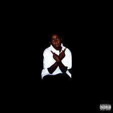

Ken Carson (Кеньятта Фрейзер-младший) — американский рэпер и продюсер из Атланты, получивший известность как участник лейбла Opium. Он является одним из главных представителей жанра «рейдж-рэп» (rage-rap), известным по альбому A Great Chaos и частому сотрудничеству с Playboi Carti
«Boy Barbie» — это дебютный мини-альбом американского рэпера Кена Карсона, выпущенный в 2020 году, который помог ему заявить о себе. Релиз, содержащий 5 треков, стал одним из первых шагов артиста перед подписанием на лейбл Opium

«Project X» — дебютный студийный альбом американского рэпера Кена Карсона, выпущенный в 2021 году на лейбле Opium. Альбом представляет собой энергичную смесь «рейдж»-музыки и поп-трэпа, которая помогла закрепить позиции артиста на сцене.

«Teen X» — это дебютный EP рэпера Ken Carson, выпущенный в 2020 году, который помог артисту закрепиться на сцене. Релиз отличается мрачным «rage».

«XTENDED» — это делюкс-версия альбома «X» от Ken Carson, выпущенная в 2022 году, которая дополнила оригинал пятью новыми агрессивными треками. Релиз укрепил стиль артиста лейбла Opium, предложив фанатам мрачное звучание и хитовые композиции, включая «Freestyle 3».
Ken Carson — американский рэпер из Атланты и участник лейбла Opium Playboi Carti, ставший популярным благодаря энергичному «rage» звучанию и альбому A Great Chaos. Он известен своими мрачными битами, запоминающимися рефренами и активным использованием SoundCloud, став одной из ярких фигур новой школы хип-хопа.

«More Chaos» — это агрессивный четвертый студийный альбом Кена Карсона, вышедший в апреле 2025 года на лейблах Opium и Interscope. На пластинке из 22 треков артист укрепляет свой статус «короля моша», сочетая мрачные биты с энергичными историями о гастролях и славе.
Listen